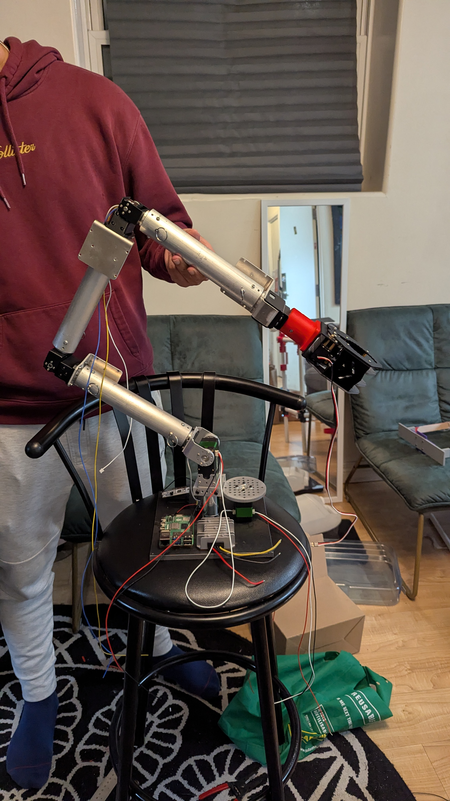

OMNI Modular Robotic Arm
Sep 2025 - Mar 2026
Designed a 5-DOF adaptable robotic manipulator system using SolidWorks. Fabricated modular joints utilizing 3D-printed PETG bushings, bayonet mounts, and plunger pins to maintain concentricity and allow for rapid physical modularity. Programmed automatic Inverse Kinematics Algorithms for servo motors using Raspberry Pi and STM32 controllers, resulting in rapid arm reconfiguration within 1 minute.
